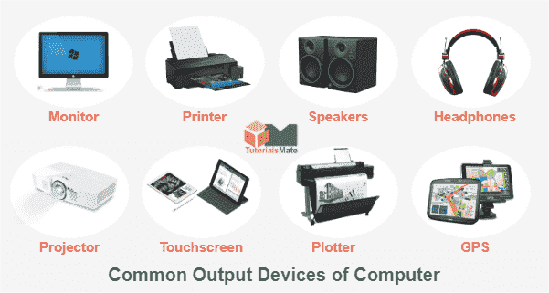

Pengertian Hardware Jaringan atau Perangkat Keras Jaringan Komputer

Pengertian hardware atau perangkat keras komputer adalah semua jenis piranti atau komponen komputer yang bagian fisiknya dapat dilihat secara kasat mata dan dirasakan langsung. Menurut pendapat ahli James O’Brien, pengertian hardware merupakan semua komponen/peralatan fisik yang digunakan dalam pemrosesan informasi seperti CPU, RAM, monitor, mouse, keyboard, printer, scanner, dan lain-lain. Biasanya, hardware terlihat sebagai bentuk output dari setiap proses sistem operasi komputer. Namun tentu saja, perangkat keras harus dibantu dengan software pendukung agar perintah yang ada dalam komputer dapat dioperasikan baik
Fungsi Hardware Atau perangkat Keras Secara Umum
Setelah tau pengertian hardware, kamu harus tau juga apa fungsi hardware atau perangkat keras secara umum dalam sebuah sistem operasi komputer. Adapun fungsi hardware yaitu untuk mendukung kerja komputer, menampilkan atau menerima input (masukan) proses, mengolah data/informasi, memberikan output, serta menyimpan data/informasi yang terpasang di dalam maupun di luar komputer.
Jenis Jenis Hardware Berdasarkan Fungsi
Jenis hardware umumnya dikelompokkan berdasarkan fungsi setiap hardware. Berikut ini ulasan jenis hardware menurut fungsi atau kegunaannya:
- Input Device (perangkat input/masukan)

Jenis perangkat keras komputer ini berfungsi untuk memasukkan data atau informasi (dalam bentuk teks, gambar, video, dan audio) ke komputer. Beberapa contoh hardware yang termasuk input device seperti keyboard, mouse pen, microphone, webcam, joystick, dan lain-lain.
- Process Device/Hardware (perangkat proses)
Sesuai namanya, perangkat keras jenis process drive berfungsi untuk mengolah data dan menjalankan proses pada sistem komputer. Contoh process device yaitu CPU, RAM, VGA, dan sebagainya.
- Output Device (perangkat output/keluaran)

Yang ketiga, ada jenis hardware untuk mencetak dan menampilkan informasi dari hasil input data. Untuk data tersebut berasal dari hardware input setelah hardware process. Contoh: speaker, monitor, dan printer.
- Storage Device (perangkat untuk menyimpan)

Storage device merupakan perangkat keras komputer yang berfungsi sebagai media penyimpanan, berguna untuk menyimpan data-data komputer. Contohnya, hardisk, floppy disk, CD/DVD, dan flashdisk.
Beberapa Contoh Hardware dan Pengertiannya
- Motherboard

Motherboard (atau biasa disebut mainboard, systemboard, logic board, baseboard atau mobo) merupakan sebuah printed circuit board (PCB) yang bertindak sebagai tulang belakang pada sebuah komputer, sebab motherboard menyediakan sebuah konektivitas elektrik yang disebut bus sehingga semua komponen dan perangkat eksternal pada motherboard tersebut dapat terhubung. Fungsi utamanya yaitu sebagai media yang menampung komponen pada komputer.
- Power Supply
Pengertian Power Supply adalah salah satu hardware di dalam perangkat komputer yang berperan untuk memberikan suplai daya. Biasanya komponen power supplay ini bisa ditemukan pada chasing komputer dan berbentuk persegi.Fungsi dari power supply adalah memberikan daya arus listrik ke berbagai komponen atau hardware yang terdapat di dalam chasing komputer.
- Mouse

Mouse adalah salah satu hardware komputer yang menerima input-an berupa gerakan, tekanan tombol (click), dan penggulungan (scroll) yang dapat digunakan untuk memilih teks, ikon, file, dan folder. Mouse dalam Bahasa Indonesia diterjemahkan sebagai “tetikus”. Dikatakan demikian karena memang bentuk device ini menyerupai tikus yang kecil meruncing di depan dan menggembung besar di bagian belakang.
- Monitor

Monitor adalah perangkat keras komputer yang berfungsi untuk menampilkan hasil proses dari komputer dalam bentuk teks, gambar, ataupun video secara visual. Dalam hal ini monitor berperan sebagai perangkat output penyusun sebuah komputer dan sebuah komputer takkan bisa digunakan jika monitornya tidak ada. Itulah alasan mengapa monitor dianggap sangat penting dalam sebuah komputer.
- Prosesor

Prosesor adalah komponen utama atau otak dari laptop / komputer Anda. Prosesor terletak tepat di tengah motherboard. Prosesor memiliki fungsi yang penting bagi seluruh operasi perangkat komputer karena semua perintah dimulai dari processor. Maka dari itu, memilih prosesor terbaik untuk mendukung pekerjaan menggunakan komputer atau laptop sangat penting bagi pengguna. Mulai dari pekerjaan sederhana seperti menulis, membalas e-mail, berselancar di internet, main game, dan mengolah grafis semua dilakukan dengan komputer atau laptop
- Random Acces Memory

RAM adalah suatu hardware yang ada di dalam komputer sebagai tempat penyimpanan data sementara (memori) dan berbagai instruksi program. RAM kepanjangan dari Random Acces Memory. Data di dalam RAM bersifat sementara yang berarti dapat hilang ketika komputer dinon-aktifkan atau daya listrik ke power supply dicabut dari perangkat.
- Keyboard
Keyboard adalah sebuah perangkat keras (hardware) pada komputer yang berfungsi sebagai alat untuk input data yang berupa huruf, angka dan simbol. Atau definisi keyboard yaitu suatu perangkat keras pada komputer yang berbentuk papan dan memiliki berbagai macam tombol yang dimana tombol tersebut fungsinya berbeda tergantung pada penekanannya yang bisa menghasilkan proses yang sesuai dengan keinginan penggunanya.
- Source Youtube Perangkat Keras
Pengertian Jaringan Komputer

JARINGAN komputer adalah dua atau lebih perangkat komputer yang saling terhubung atau terkoneksi antara satu dengan yang lain dan digunakan untuk berbagai sumber data.
Setiap titik akhir dalam suatu jaringan memiliki tanda pengenal, yang biasa disebut dengan alamat IP atau alamat media access control. Endpoint dapat mencakup server, komputer, telepon, dan perangkat keras (hardware) jaringan yang lain. Jaringan komputer (jarkom) dapat dibuat dengan menggunakan gabungan dari teknologi kabel dan wireless.
Jaringan dapat bersifat privat maupun publik,dalam penggunaan jaringan private, biasanya memerlukan akses user untuk memasukkan kredensial berupa kata sandi yang dimasukkan secara manual oleh administrator atau diperoleh langsung oleh pengguna. Untuk penggunaan jaringan publik seperti internet, tidak membatasi suatu akses.
Jenis Jenis Jaringan Komputer
- PAN (Personal Area Network)
- LAN Local Area Network
- WAN (Wide Area Network)
- Internet
Jenis jaringan ini mencakup wilayah yang lebih kecil, misalnya saja pada kantor, dan rumah. Biasanya, banyak digunakan hanya untuk keperluan internet, serta printer. Dan tidak memerlukan resources yang besar untuk menggunakan jaringan PAN.
Jaringan LAN berfungsi untuk menghubungkan perangkat jaringan dalam kondisi jangkauan yang relatif kecil. Contoh penerapan jaringan LAN yaitu sistem jaringan pada sekolah, kantor, maupun rumah.
Banyak orang yang cenderung menggunakan konektivitas tertentu, terutama pada token ring dan ethernet. Selain itu, LAN juga menyediakan teknologi jaringan wireless dengan menggunakan WIfi dan lebih dikenal dengan WLAN (Wireless Local Area Network).
WAN merupakan kumpulan dari LAN yang tersebar secara geografis. Jaringan WAN cenderung untuk menggunakan teknologi seperti ATM, X.25, serta Frame Relay untuk konektivitas jarak yang lebih jauh lagi.
Internet adalah jaringan komputer terbesar yang pernah diciptakan oleh manusia. Ruang lingkup dari internet mencakup hampir seluruh penjuru dunia. Siapapun dapat mengakses berbagai sumber informasi dalam berbagai perangkat komputer, seperti PC, smartphone, laptop, tablet, TV, dan lain sebagainya.